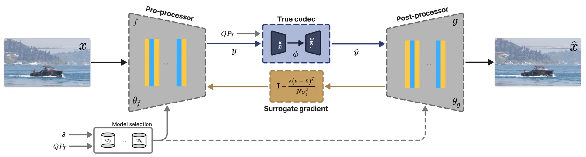

新论文 · 日期 2026-06-23 · score 12 · cs.GR, cs.AI, cs.CV
作者：Xiaoyang Liu, Shangzhe Wu, Kai Han
评分 9.2/10
3DGS物理仿真场景级交互非刚体变形
一句话工作总结：把 3DGS、网格和流体统一抽象为物理粒子，使捕获场景中的高斯资产能够参与真实交互和非刚体变形。
3D Gaussian Splatting 已能实现高质量实时渲染，但现有物理引擎难以直接理解 3DGS 表示，既有 physics-for-3DGS 方法也多停留在孤立物体与简单平面交互。本文提出 Representation Abstraction Framework，将 3DGS、虚拟网格、流体等异构资产统一翻译为物理粒子集合，并结合由场景捕获得到的静态碰撞边界，在求解器无关的物理内核中处理交互，再把物理结果…
3D Gaussian Splatting (3DGS) has achieved state-of-the-art photorealistic rendering, but the representation gap prevents these assets from being physically interactive. Production-grade physics engines do not…

新论文 · 日期 2026-06-23 · score 10 · cs.GR, cs.CV
作者：Haoran Zhu, Youcheng Cai, Huangsheng Du, Jingyang Meng, Ligang Liu
评分 8.4/10
3DGSMesh 转换全光函数采样全局光照
一句话工作总结：从网格直接、可解释地生成 3DGS，面向可控资产转换、共享渲染和带全局光照的高质量场景表示。
现有 3DGS 与网格结合工作多关注从多视图图像重建 mesh，或以启发式方式把高斯绑定到网格。Mesh2GS 反向研究从 mesh 直接构建 3DGS：作者基于 plenoptic sampling theory 推导采样视角数量与 3D Gaussian 分布，提出带 albedo-shading 分解的 3DGS 更新过程以高效捕获全局光照，并用神经光照增强模块处理非朗伯反射。实验显示其在高质量全局光照渲染和…
3D Gaussian Splatting (3DGS) has emerged as a promising method for high-quality, real-time 3D reconstruction. To associate 3DGS with mesh representations, existing methods primarily focus on 3DGS-to-mesh recon…

新论文 · 日期 2026-06-23 · score 9 · cs.GR, cs.DC
作者：Faruk Alpay, Baris Basaran
评分 7.9/10
3DGS鲁棒渲染边缘部署容错
一句话工作总结：用大规模 bit-flip 实验定位 3DGS 的关键故障位，并用轻量支撑域 clamp 防止边缘/航天渲染出现灾难性污染。
面向航天处理器和机器人边缘设备中的瞬态故障，本文系统测量 3DGS 模型参数单 bit 翻转对渲染的影响。作者实现 GPU 驻留并行故障注入，在四个场景、六类字段、全 bit 位和 fp32/fp16/bf16 格式上执行 380 万次以上实验。结果显示大多数翻转几乎无感，但少数高阶位，尤其尺度参数的符号位，可让单个 primitive 覆盖大面积画面。作者给出 IEEE-754 与渲染管线激活的闭式扰动界，并提出…
Three-dimensional Gaussian splatting is a standard real-time scene representation increasingly deployed on hardware exposed to transient faults, such as spaceborne processors and robotic edge devices where sil…

新论文 · 日期 2026-06-23 · score 7 · cs.RO, cs.AI, cs.LG
作者：Letian Chen, Yiren Lu, Justin Fu, Yichen Xie, Runsheng Xu, Jyh-Jing Hwang, Ben Sapp, Drago Anguelov
评分 7/10
自动驾驶运动规划MLLM强化学习微调
一句话工作总结：把 MLLM 的文本轨迹输出接到规划奖励上做 RLFT，减少自动驾驶规划中的碰撞重叠和 off-road 行为。
传统多模态大模型训练多依赖 next-token 预测和监督微调，容易只模仿文本坐标序列而忽视多步规划后果与安全/舒适目标。MAGNIFIED 将预测 token 映射为车辆轨迹，并用 token-level planning rewards 做强化学习微调，使模型直接优化自动驾驶规划指标。作者在 Waymo Open Motion Dataset 上使用栅格化鸟瞰图和 tokenized trajectories…
Multi-modal Large Language Models (MLLMs) have demonstrated remarkable capabilities in semantic understanding and common sense reasoning, making them promising candidates for solving planning problems in auton…
新论文 · 日期 2026-06-23 · score 7 · cs.GR, cs.CV
作者：Nicol\'as Violante, George Kopanas, Linus Franke, Julien Philip, George Drettakis
评分 7.4/10
3DGS 编辑辐射场对象迁移光照一致性
一句话工作总结：用扩散模型修正 3DGS 对象跨场景粘贴后的光照不一致，并通过后优化整合为新的三维表示。
在 3DGS 或辐射场中把源场景物体直接贴入目标场景，常因光照条件不一致而显得不真实。本文训练一个扩散模型来 harmonize 光照不一致的合成视图，训练数据包含合成、生成和真实图像对。完整流程先从源 3DGS 场景中提取对象，渲染其与目标场景的初始组合视图，再逐视图进行光照一致化，最后通过 3DGS 后优化把一致化结果整合回三维表示。
3D Gaussian Splatting (3DGS) is widely used to capture and render real scenes. Compositing objects from one capture into another has applications in many domains, such as VFX, architecture and interior design,…

新论文 · 日期 2026-06-23 · score 7 · eess.IV, cs.AI, cs.CV, physics.med-ph
作者：Dayun Ju, Chanyoung Kim, Sunyoung Jung, Hyo-Jung Jung, Chena Lee, Younjung Park, Seong Jae Hwang
评分 5.3/10
3D 医学图像分割语义锚定临床先验
一句话工作总结：面向 3D 医学 MRI，小目标分割通过基础模型语义锚定和临床先验获得更稳定、解剖一致的边界。
TMJ 关节盘 MRI 分割受小尺寸、低对比度和形态变化影响，普通分割网络常产生碎片化或解剖不一致的 mask。TISC 框架先用 Prototypical Semantic Anchoring 聚合相邻切片的 MedDINOv3 特征，并形成 prototype-driven similarity map 以稳定定位关节盘；随后通过 Clinical-Metadata Point Refinement 模块利用…
Segmenting the temporomandibular joint (TMJ) disc from MRI is essential for accurate diagnosis of internal derangement, yet it remains unreliable in practice due to its small size, low contrast, and morphologi…

新论文 · 日期 2026-06-23 · score 6 · cs.RO, cs.AI, cs.CV
作者：Yuxin Jiang, Chang Yu, Yunuo Chen, Xiang Feng, Yin Yang, Nishank Gite, Chenfanfu Jiang
评分 6.7/10
机器人操作世界模型情节记忆长程任务
一句话工作总结：为视频世界模型策略增加可注入的情节记忆，让机器人在长程操作中利用已经离开视野的历史事件。
视频世界模型策略通常只条件于短观察窗口，长程操作中若关键事件已离开视野，决策会变成非马尔可夫问题。MemoryVAM 引入 Recap-Cue 记忆模块：Perceiver-based Recap Compressor 将逐帧 CLIP embedding 压缩为记忆 token，Cue Gate 根据记忆和语言估计任务完成状态，再把这些 token 注入视频 backbone 与动作 decoder。该机制可适配…
Video-world-model policies learn action-relevant representations by predicting future observations. However, they condition on only a short observation window, which renders long-horizon manipulation non-Marko…

新论文 · 日期 2026-06-23 · score 6 · cs.CV, cs.AI, eess.SP
作者：Esteban Pesnel (COMPACT), Julien Le Tanou (COMPACT), Michael Ropert (COMPACT), Aline Roumy (COMPACT), Thomas Maugey (COMPACT)
评分 4.6/10
视频压缩替代梯度神经 Wrapper边缘视觉
一句话工作总结：把传统视频 codec 的替代梯度解释为局部投影近似，并用于训练完整神经预/后处理 wrapper。
神经 wrapper 通过学习式预处理和后处理提升传统视频 codec 压缩效率，但 codec 中大量离散决策导致端到端训练不可微。本文重新解释 SCALED 替代梯度：它可看作视频 codec 的一阶局部近似，而不仅是重参数化技巧。作者进一步将该梯度用于完整神经 wrapping，即同时训练 pre- 和 post-processing 网络，并证明其跨不同 codec、质量因子和下采样任务有效，在 x264…
Neural wrappers are learned pre-and postprocessing networks designed to enhance the performance of conventional video codecs. Although these approaches can significantly improve compression efficiency, trainin…

新论文 · 日期 2026-06-23 · score 6 · cs.GR, cs.CL, cs.CV, cs.LG
作者：Colten Reissmann, Hugo Garrido-Lestache Belinchon
评分 4.3/10
图像上色多模态CLIP 条件扩散模型
一句话工作总结：通过控制变量实验表明 CLIP 文本条件能稳定改善灰度图上色的像素指标和感知指标。
灰度图上色常见于历史影像修复、医学成像和艺术媒介，但同一灰度输入对应多种合理颜色。本文控制变量比较 U-Net 与 Stable Diffusion 1.5 两类架构在有/无 CLIP 文本条件时的指标差异。结果显示文本条件在 U-Net 层面提升 PSNR 5.6%、SSIM 1.2%、colorfulness 36.6%，LPIPS 降低 7.6%；在 Stable Diffusion 层面提升 PSNR 5.…
Grayscale images are commonly found in historical photography restoration, medical imaging, and artistic media. However, automatically applying color to these images remains a significant challenge in computer…

新论文 · 日期 2026-06-23 · score 6 · eess.IV, cs.AI, cs.CV
作者：Jiancheng Zhao, Xiang Ji, Yifan Zhan, Zunian Wan, Yinqiang Zheng
评分 4.8/10
图像压缩Mixture-of-Experts机器感知动态计算
一句话工作总结：在压缩模型中用 token 级 MoE 做动态计算，让同一图像码流同时服务人眼重建和下游机器感知。
面向机器视觉的图像压缩需要同时服务多种下游任务，传统任务专用设计或外挂式迁移方法部署成本高且计算模式静态。MoECodec 在 transformer 压缩模型的 FFN 层中引入 token-wise Mixture-of-Experts，使计算按输入内容和任务目标动态分配。为稳定路由，作者结合 expert-choice routing 与空间 total variation 正则，鼓励空间连续的专家分配，并提…
Image compression for machines calls for a unified codec that serves multiple downstream vision tasks. Existing approaches either adopt task-specific end-to-end designs, raising parameter and deployment overhe…